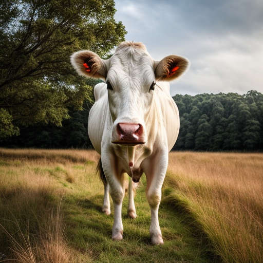
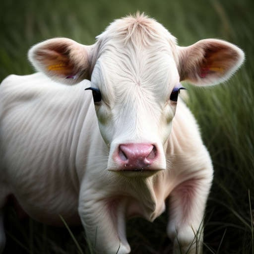

Live NGSI-LD Animal records for the two head held in the Big Red Barn, queried from the context broker — 2026-09-06
urn:ngsi-ld:Animal:cow006

urn:ngsi-ld:Animal:cow103

Twilight isn't sick — she calved today. Buttercup's calvedBy relationship points straight at her (cow006), and everything else in the record lines up with a fresh cow: alone in the calving pen but for her calf, reproductive condition noStatus (the only adult cow not active/inHeat/inCalf), moved onto oats, and a weight dip-and-recovery (436→427→434 kg) consistent with a gestation body-condition swing.
Worth watching anyway: Twilight is 8.4 years old (the milk-fever risk group) and her 52 bpm is the lowest resting heart rate in the herd — her collar is healthy, so it's a real reading, not a fault. Buttercup is light at 20 kg, so the colostrum check should be the priority over the next few hours.